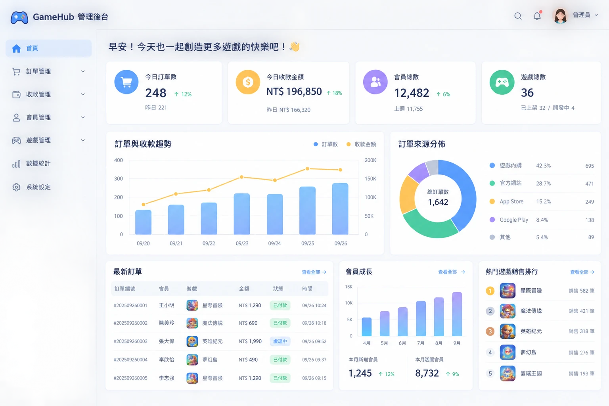

01
訂單、收款、會員，每一筆都對得上
我負責過遊戲公司收款系統。客人在網站上付的每一筆錢，要經過金流公司，再回到平台入帳；而供應商、會員、訂單、稽核、營運報表，每個角色要看的資料都不一樣。我的工作，就是讓每一筆錢從哪裡來、去了哪裡，都清清楚楚、查得到。
→ 所以我能幫你
如果你每個月都要從好幾個平台匯出資料，再一格一格貼進 Excel 對帳，我可以幫你把這些資料串在一起，報表自動產生，不用再熬夜拼湊。